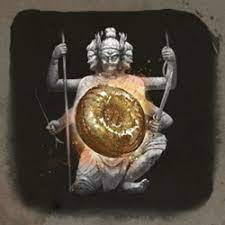
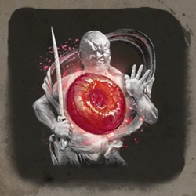
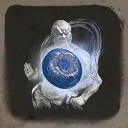
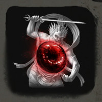

Items
Here you can see all the items in the game, how to use them and were to find them.
   
Gokans-sugar(Golden-sugar)
Gokans-sugar reduces damage to your poster bar when you are deflecting attacks from enemies.
Akos-Sugar(Red-sugar)
Akos-sugar is used to temporarily increase Sekiro's Attack Power for a short amount of time
Ungos-sugar(Blue-sugar)
Ungos-sugar reduce the damage taken of Sekiro's Vitality for a short amount of time.
Yasharikus-Sugar(BloodRed-sugar)
Yashariku changes how you play and makes you much more formidable, provided you can plant your feet and stay aggressive.
Divine confetti
Divine confetti is used to increase your damage against spirits and apparitions. When applied to your weapon, Divine Confetti adds a purple glow and will dispel effects from enemies if they're hit multiple times. It's the most optional way to use it on side bosses like Shichimen warrior and Headless.